Module B: Graphically create, scale, upgrade, and rollback an application on Red Hat OpenShift
Amy's has a mandate to increase the productivity and output of her developers and programmers. This is precisely the reason why Stacked Corp. chose to make the investment in a platform such as Red Hat OpenShift on Power Systems; but in turn, the company expects to see measurable gains across these metrics in order to justify the expense of the investment.
Ahead, you will learn (alongside Amy's team) how to manage a basic application's lifecycle via OpenShift (OCP): how to create and deploy an application from an existing Docker image, scale it according to workload demands, update it to a newer version, and finally rollback the application to a previous version.
You will tackle these challenges using two different approaches:
- Module B: the graphical interface method
- Module C: the programmatic method
The first step will be the creation of an application within OpenShift Container Platform from an existing image hosted on a Red Hat Quay.io repository. Quay.io is a Red Hat-owned registry for containerized images, providing a useful alternative to DockerHub for hosting images and code. In this module, we will be performing these operations graphically using the web interface provided by Red Hat OpenShift.
- Open the main dashboard of the OpenShift web interface.
- Log in to your OCP cluster by clicking htpasswd and then supplying the account name (
cecuser) and password credentials.
SOUND FAMILIAR?
The steps for setting up a Project will be reminiscent of what you did in Module A. Don’t worry — the tasks covered will deviate shortly!
-
From the main landing page of the OCP cluster web interface, locate the Administrator / Developer toggle button near the top-left of the page. You will use this toggle frequently over the course of the hands-on lab to cycle between Administrator and Developer perspectives (and privileges) within the OCP cluster.
For now, make sure it is toggled to Administrator.
-
From the tabs on the left of the page, locate Home and then drill down into Projects.
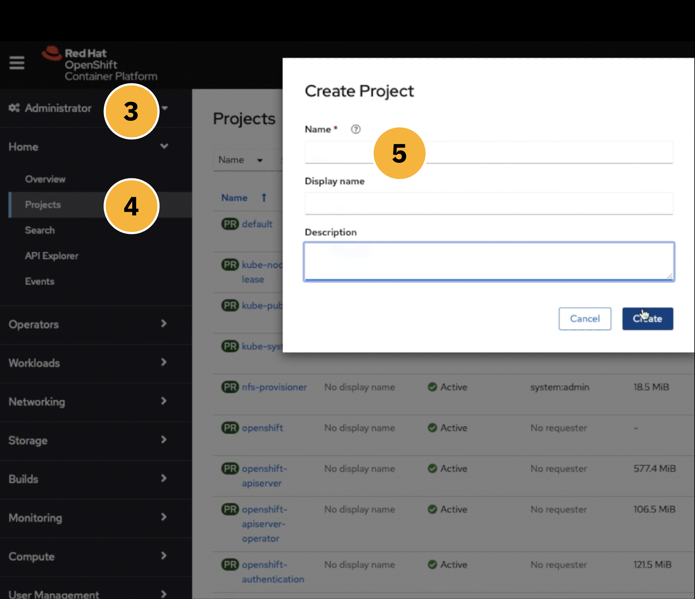
-
Create a new Project for demonstrating OCP’s Source-2-Image capabilities: from the top-right of the page, click the Create Project button.
Assign the following values to the Project:
- Name: set to
mypyflask-project - Display name: set to
mypyflask-project - Description: set to a description of your liking
When satisfied with your selections, click Create to continue.
- Name: set to
- After creation of the
mypyflask-project, toggle the perspective button in the top-left to Developer.
- Click the Topology tab from the left navigation bar. As expected, no resources have yet to be assigned.
- Verify that the Project is set to the same one you created as an administrator in Step 5 (
mypyflask-project).
-
Deploy your first application to the OCP cluster. From the left navigation bar, click +Add.
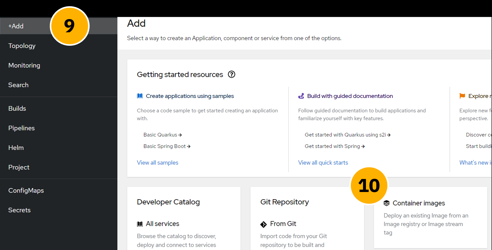
- From the list of available sources, use the Container Images category.
-
Pull code from an image hosted within a Red Hat Quay.io repository: under the Deploy Image page, supply the following address under the Image name from external registry field:
-
Scroll down until you reach the General section. Here you can provide an Application Name (
mypyflask-app) and a unique Name (mypyflask-app) that will be associated with the resource. Note that if an image already exists in OCP with the same name you will receive an error message — be sure to use a unique name.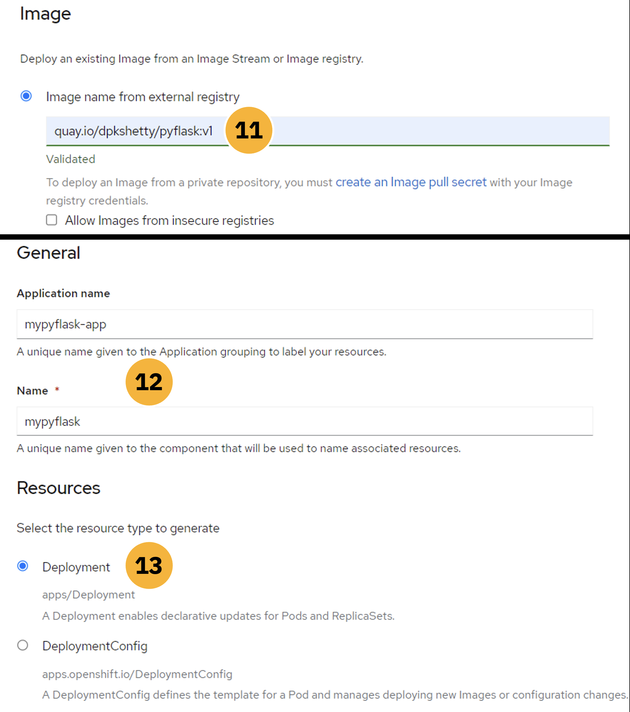
- Further down you will reach the Resources section. Here, there are two options for the type of resource OCP will generate. Select the
Deploymentoption.
- Make sure that the Create a route to the application box is enabled before continuing.
- Click the Show advanced Routing options button to expose additional settings.
- Ensure that the Target Port field is set to
8080.
-
Enable the Secure Route option.
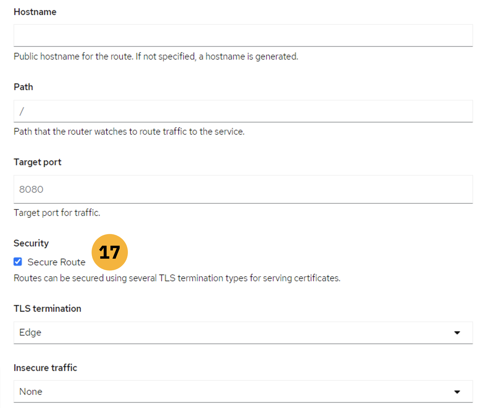
- Set the TLS Termination field to
Edge.
- Set the Insecure Traffic field to
None.
-
When satisfied, click the Create button to continue.
You can inspect the OpenShift cluster using the Web graphical user interface to verify that the application deployment is underway. From the Topology page, you can view the pod deployment which is underway. It will take several moments for the pod to be initialized and brought to a Running state.
-
From the Topology page, click on the rectangular icon containing text similar to
(DC) mypyflask-app(your exact naming may differ), located just below the OpenShift logo at the center of the tile. Doing so will pull open an overview panel along the right side of the web interface.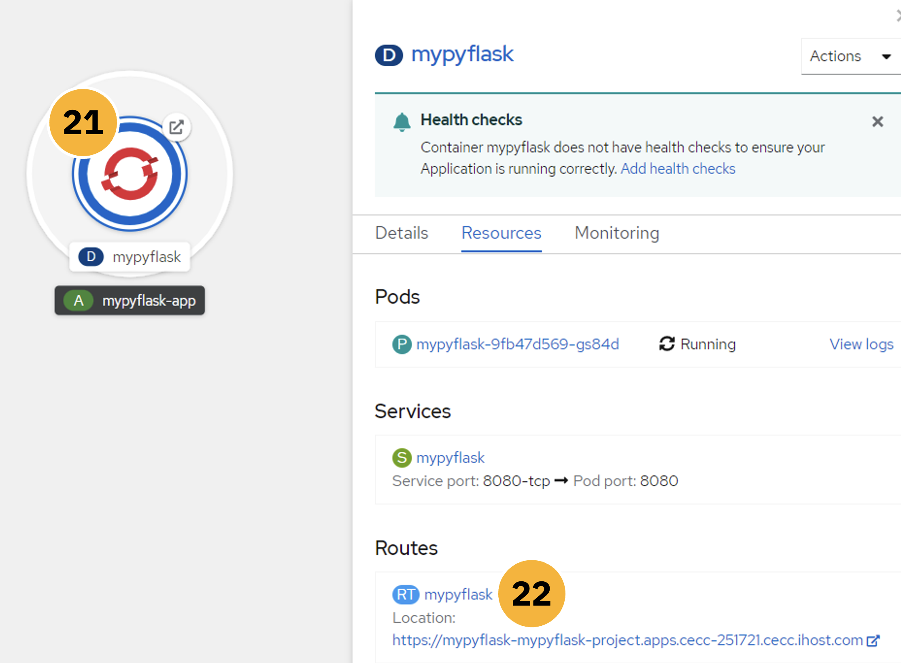
-
Click on the Location: URL located at the bottom of the panel, under the Routes section, to launch a new web browser tab where the live application is running.
Now that you have successfully deployed the application using the existing Quay.io image, we are ready to demonstrate how to scale and rollback the application.
Your next step will be to scale the application using replicas of the pod deployed in the previous section. The creation of multiple replicas of a pod will help Amy and her team to ensure that their application’s deployment always has the available capacity (and resources) to meet the need of any increased demand for the application within the company.
-
Return to the Topology page from Step 21, select the application's name as before, and then drill down into the Details tab along the right-hand side of the interface.
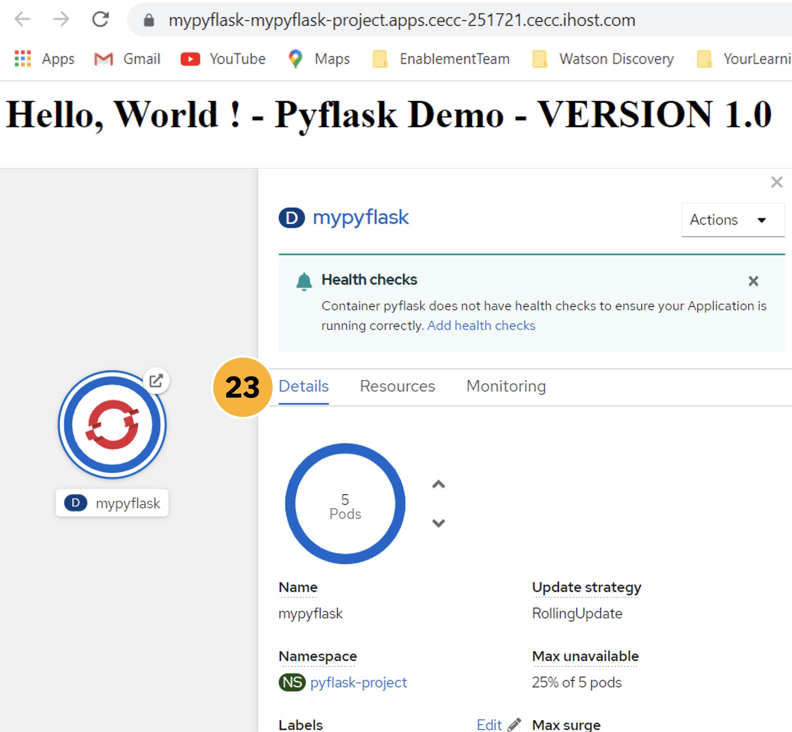
-
Take note of the blue circular ring, which describes the number of replica pods currently supporting the live application.
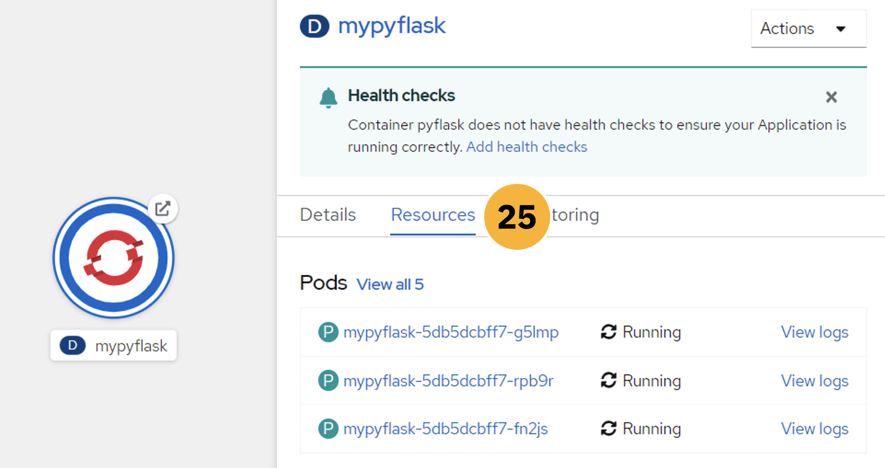
Click on the up arrow (to the right of the circle) 4 times to scale the app to a total of 5 replicas.
Scaling will begin immediately, but will need a few moments to complete. Wait until the count inside the blue circles reads
5 Podsbefore continuing.
-
Once you have verified that 5 replica pods are running, click the Resources tab. Just to the right of the Pods category is the View All button — click this.
Your browser will be directed to the Deployment page, with the Pods tab pre-selected. From this screen you can inspect at-a-glance details on all (5) pod replicas running within the OpenShift cluster.
-
Click on the Deployments link. Your browser will be redirected to a Deployment overview showing the
mypyflask-appandpodstatus.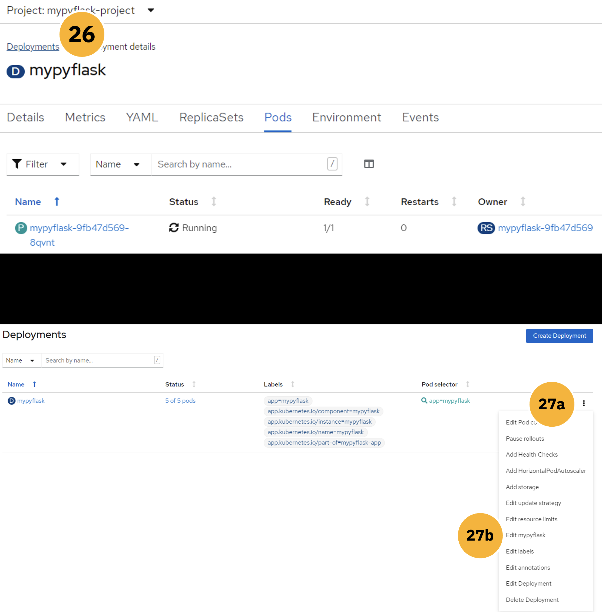
-
At the far right of the table, locate the three stacked dots and click it to pull down a menu of options.
Select the Edit mypyflask-app option.
-
From the Deploy Image page, scroll down and locate the Image section. Within the Image name from external registry field, change the address from
v1tov2. Save your changes at the bottom of the page.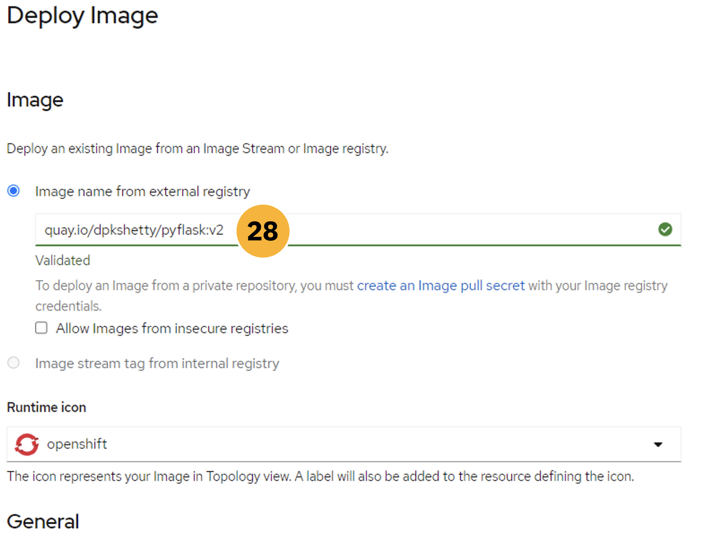
Your browser will then be taken back to the Resources view. Some patience is required as you see the page gradually update and the changes roll across the various replica pods. Over time you will see “View all 8” or “View all 10” pods, and so on.
Clicking on View All as done previously (Step 25), you'll see the old pods (representing the
v1deployment) being terminated and new pods (representingv2) being created.Wait for all old pods to terminate and new pods to be in a Running state before continuing (a total of 5 pods will remain by the time this process concludes).
-
One way to verify that the new pods are in fact running the updated application is to check the pod Details panel — do so by clicking on the name of any of the five pods.
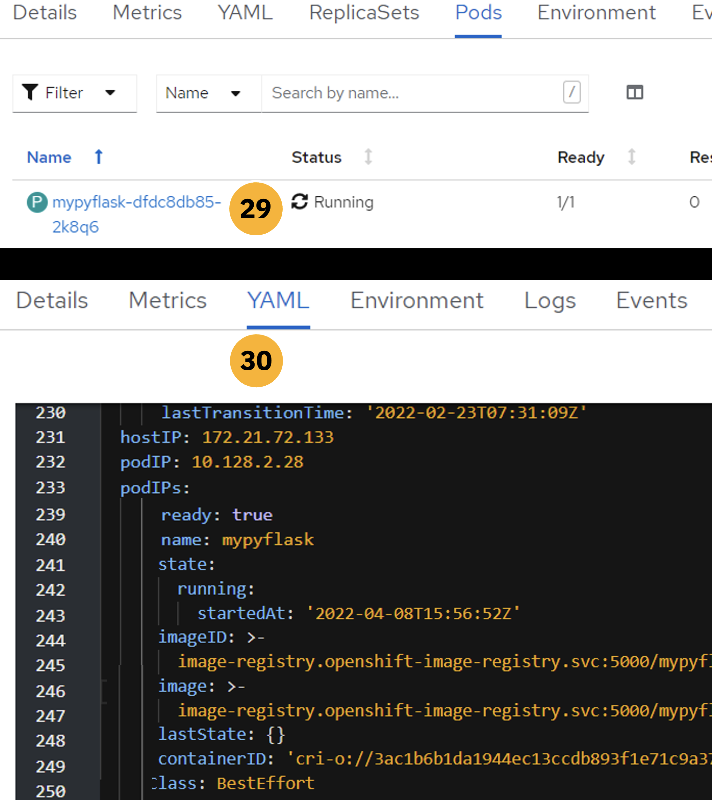
- Drill down into the YAML (Yet Another Markup Language) tab.
- Scroll down to the end of the YAML file for additional details on the status and parameters of the modified app.
-
Another (faster) way to verify the update occurred is to go back to the Topology page and click on the application’s tile icon to pull open the Details panel.
Drill down into the Resources tab.
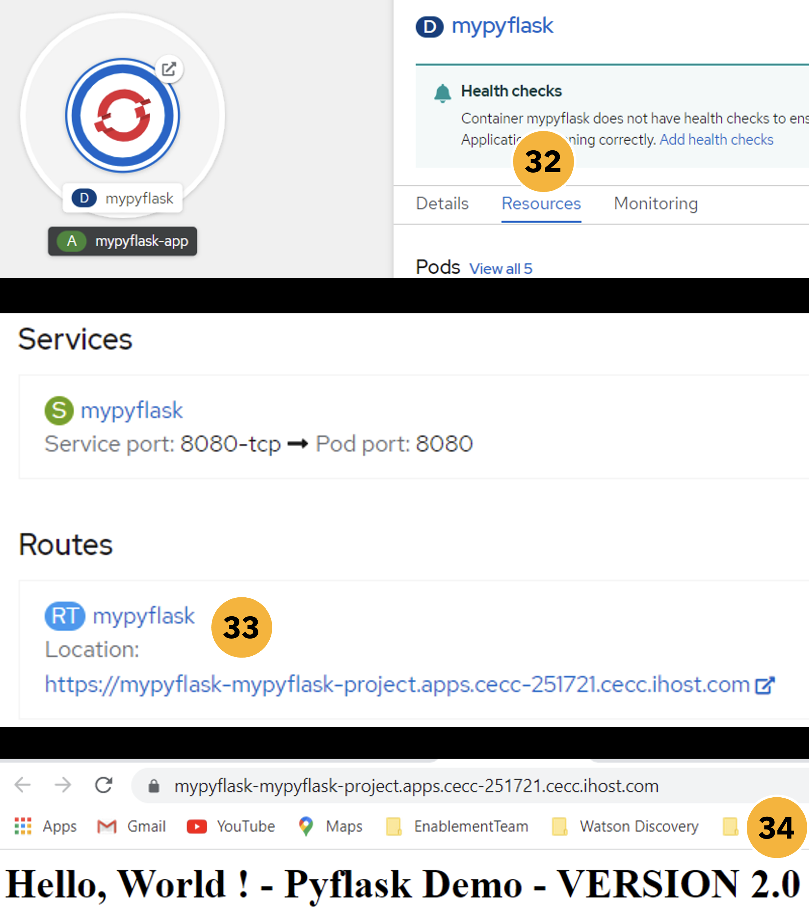
- Scroll down to find the Routes section. Click the Location: URL to open a new browser tab running the latest live version of
mypyflask-app.
-
The text rendered on-screen should display
VERSION 2.0, which confirms for Amy and the team (and yourself) that the update was successfully pushed to the live deployment.When performing a rollback, you can see references to old replicas and new replicas. In this project, the old replicas are the original 5 pods you deployed in the previous steps when you scaled the application. The new replicas come from newly created pods with the fresh image.
All pods are owned by their respective deployment. The deployment manages these two sets of pods with a resource called a ReplicaSet.
- To view the ReplicaSet for
mypyflask-app, return to the Topology page and click the application tile. Click on the name of the application (mypyflask-app) to open the Deployment details screen.
-
From the list of tabs, drill down into ReplicaSets.
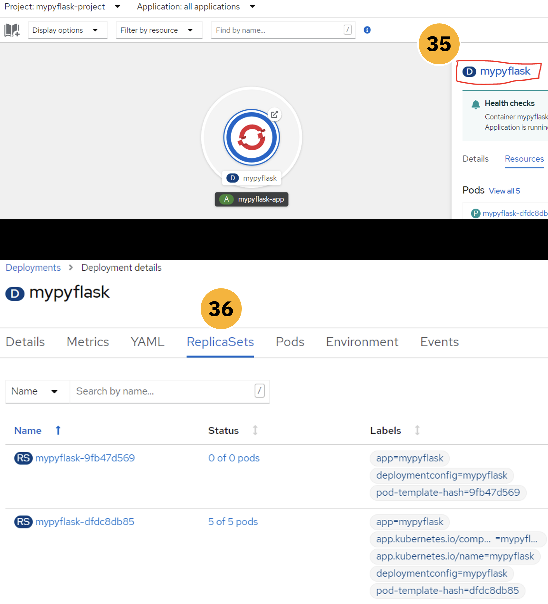
On the ReplicaSets page you will see both old (potentially 2 old) and (one) new ReplicaSets, mapping to
v1andv2ofmypyflask-app, respectively.
-
To undo (rollback) a deployment from
v2back tov1, click the three stacked dots icon (at the far right of 0 of 0 pods) to toggle open a list of commands.Select the Rollback option to execute a version change back to
v1.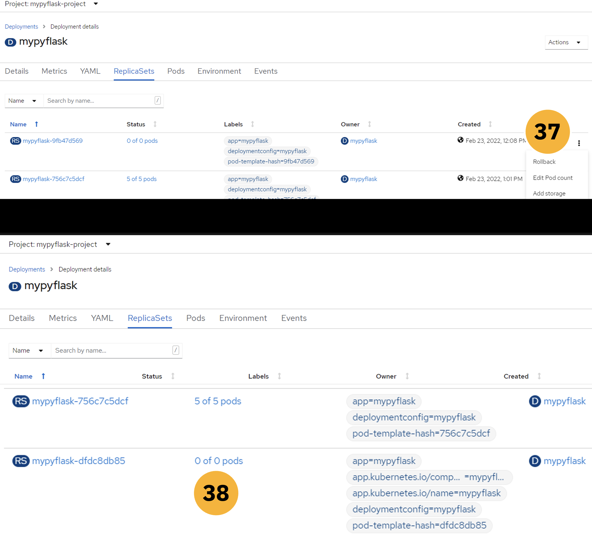
- You will see a new ReplicaSet created and pods will soon be added to that grouping. Wait for the
v2ReplicaSet to display(0 of 0 pods)and for the rolled-back (v1) ReplicaSet to display(5 of 5 pods).
- Verify that the ReplicaSet of 5 pods are running
v1of the application, using the same steps as before: either by checking the YAML tab (Steps 29–31) or Topology page (Steps 32–34).
Next Steps
In the following module, you will learn how to perform these steps in a more programmatic fashion.